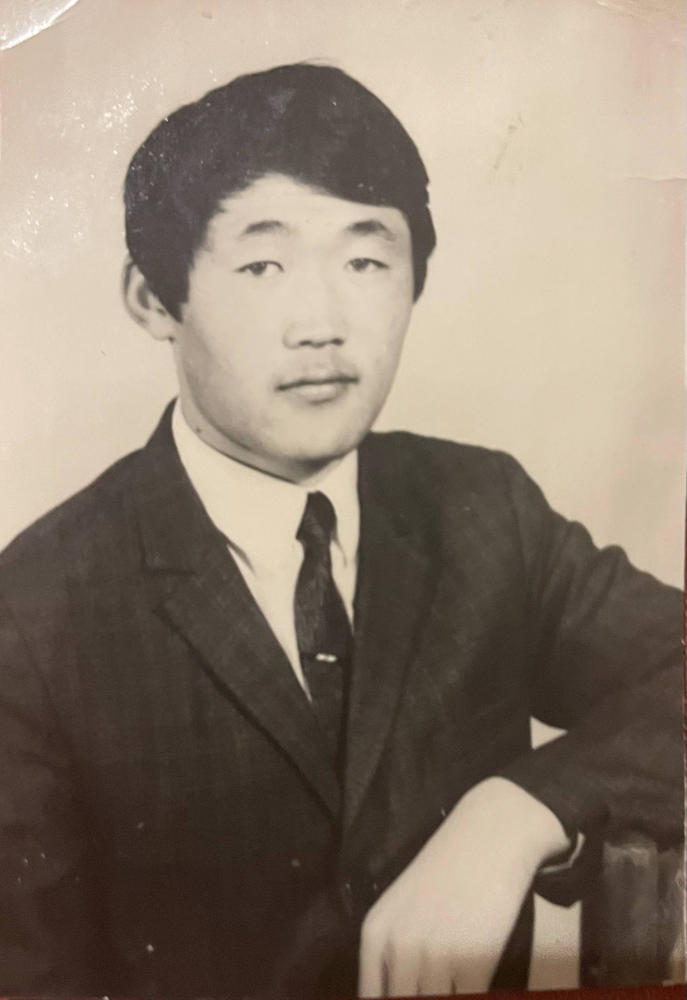
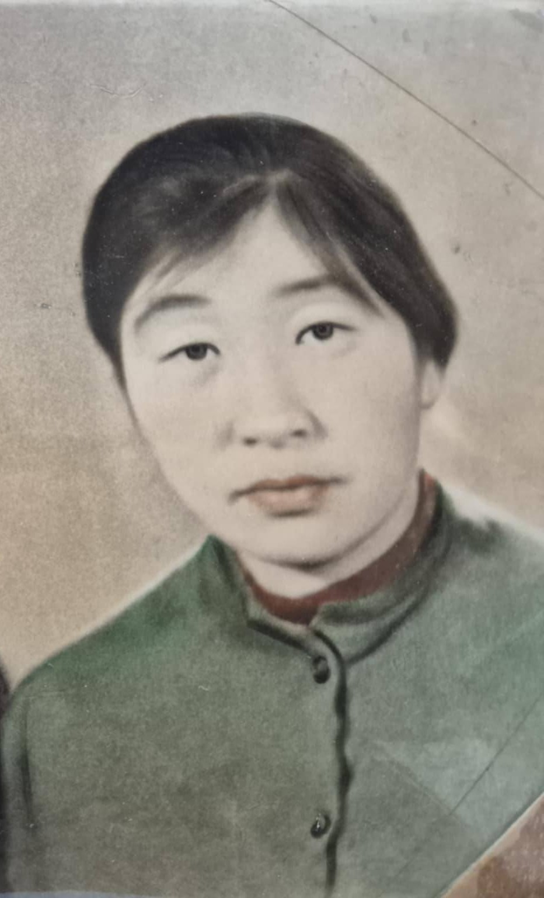

ӨВӨӨ
Пунцагийн Цэнд-Аюуш
Боловсрол ба ажил хөдөлмөр
1966 онд 10 жилийн сургуулиа төгсөж, тухайн үеийн Монгол Улсын Их Сургуульд элсэн суралцсан. 1967-1970 онд цэргийн алба хааж, 1974 онд Политехникийн дээд сургуулийг дулааны инженер мэргэжлээр төгссөн.
1974 оноос Дарханы Дулааны цахилгаан станцад ажиллаж, ээлжийн мастерын ажлаас цехийн дарга хүртэл дэвшин ажилласан. Нийт 34 жилийн хөдөлмөрийн туршлагатай.
Мэргэжлийн туршлага
- 1987 онд Новокузнецк, Москва хотод мэргэжлийн туршлага судалсан.
- 1997 онд Германы эрчим хүчний үйлдвэрт ажилтай холбоотой туршлага судалсан.
Шагнал, амжилт
- Зургаа, долдугаар таван жилийн гавшгайчийн цол, медаль.
- Дэд бүтцийн яамны хүндэт жуух бичиг.
- 2002 онд Алтан гадас одон.
2018 онд таалал төгссөн.

ЭМЭЭ
Галсан овогтой Сэрд
Боловсрол
1960 онд Хангал сумын бага сургуульд суралцаж эхэлсэн. 1964-1968 онд Сэлэнгэ сумын найман жилийн сургуульд, 1968-1970 онд Булган аймгийн 10 жилийн сургуульд суралцсан.
1970 онд Монгол Улсын Их Сургуулийн Монгол хэл, уран зохиолын ангид элсэн орж, 1975 онд багш мэргэжлээр төгссөн.
Ажил хөдөлмөр
- 1975-1994 онд Дархан хотын 7-р сургуульд.
- 1994-1997 онд Монгол-Германы хамтарсан сургуульд.
- 1997-2008 онд Од цогцолбор сургуульд ажилласан.
Боловсролын салбарт нийт 35 жил ажилласан бөгөөд 15 жил багш, 20 жил сургалтын албаны эрхлэгчээр ажилласан.
Шагнал, амжилт
- 1981, 1986 оны Гавшгайчийн медаль.
- Ардын боловсролын тэргүүний ажилтан.
- Монгол Улсын зөвлөх багш.
П.Цэнд-Аюуштай гэр бүл болж, гурван хүү төрүүлж өсгөсөн. 2019 онд таалал төгссөн.